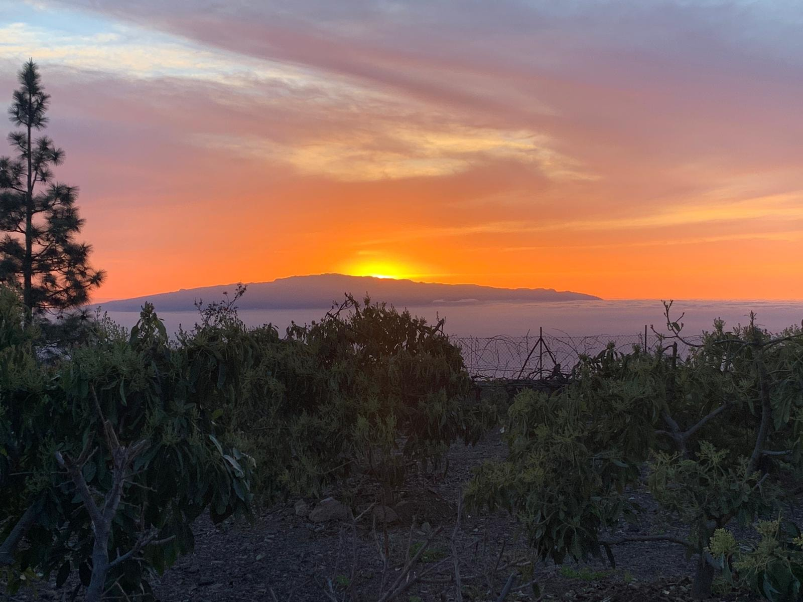
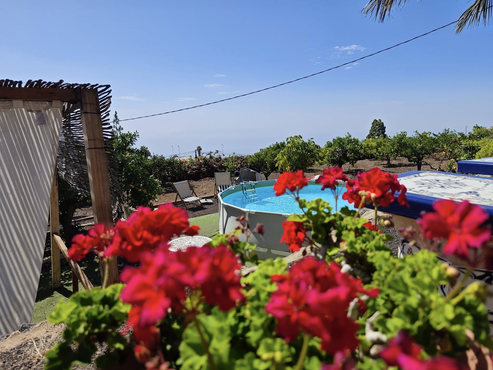
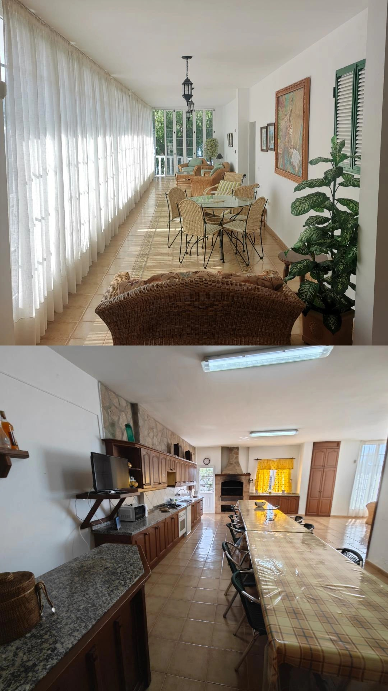
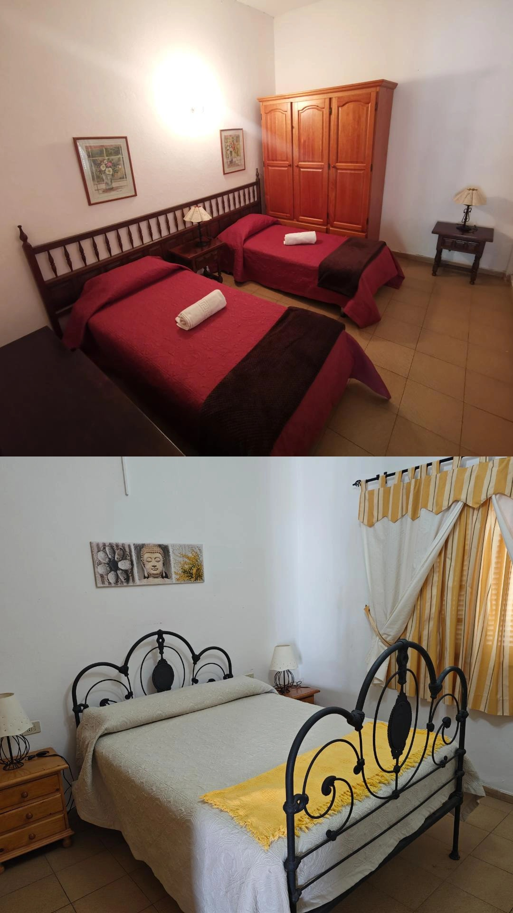

Galleria






Casa Dolores è una casa rural indipendente situata nella zona di Taucho – Tenerife Sud, immersa nella tranquillità della campagna e con vista aperta sull'oceano e su La Gomera.
È una soluzione ideale per gruppi fino a 10 persone che cercano privacy, spazi esterni e un contesto autentico, lontano dalla movida ma ben collegato alle principali zone del sud dell'isola.
La casa viene preparata e organizzata in base al numero di ospiti confermati, garantendo comfort e gestione efficiente degli spazi.
Il deposito cauzionale viene rimborsato entro 24h dal check-out se tutto in ordine.
Contattaci per disponibilità e prezzi
💬 Contattaci su WhatsApp